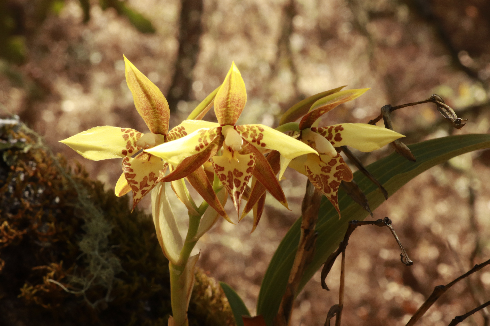
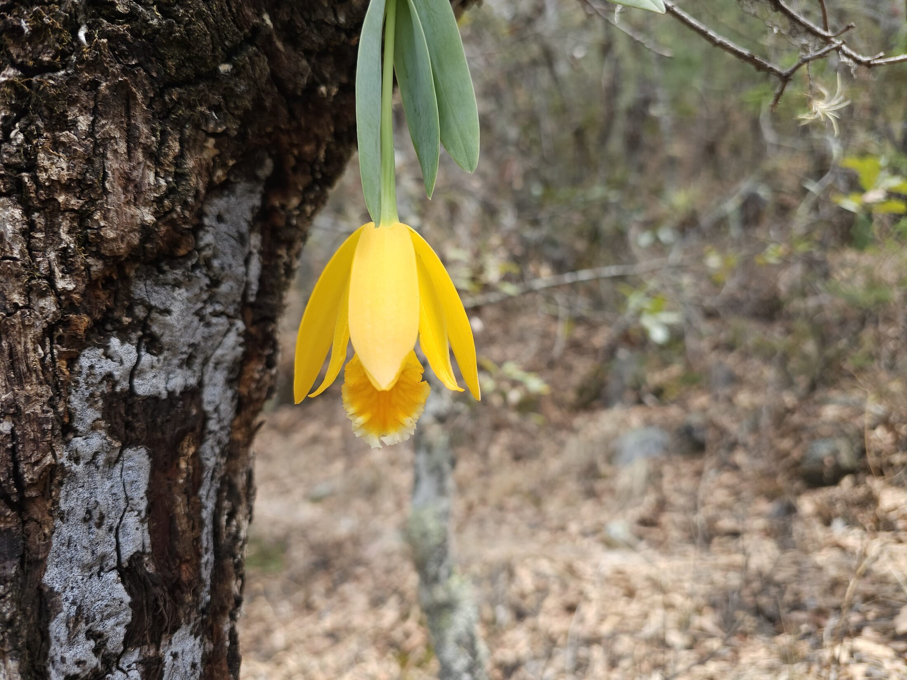
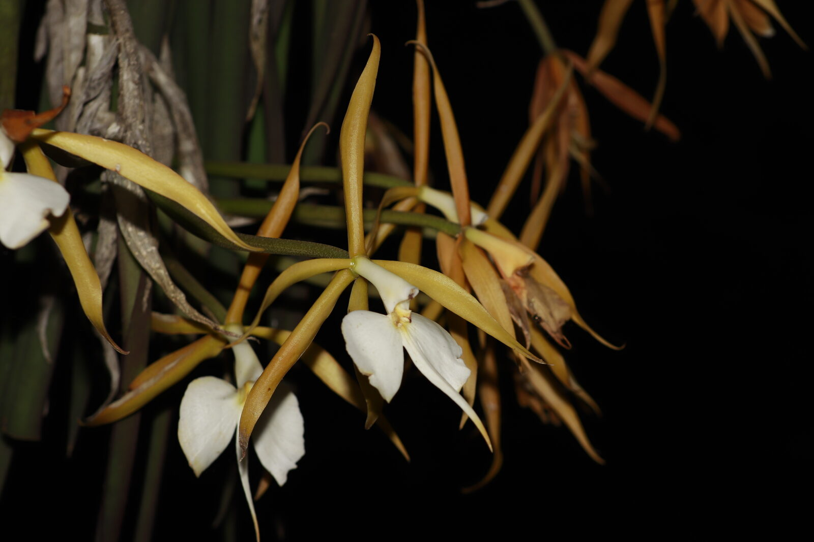

Join a small-group orchid expedition in Mexico during the spring flowering season. Eight days in the cloud forests of Veracruz and the seasonally dry oak woodlands of Oaxaca, 3–10 or 15–22 April 2027. With four participants per departure, there is time to observe and photograph orchids in their natural habitats.



Spring brings a remarkable succession of orchid flowers across Mexico. In the mountains of Veracruz and Oaxaca, the changing altitude and moisture create different flowering windows along our route. April is a chance to catch that seasonal energy in the field: spotted Rhynchostele maculata, golden Prosthechea karwinskii and the long, star-shaped flowers of Epidendrum parkinsonianum are among the plants we will look for.
Our first five days explore central Veracruz: the riparian cloud forest at the reserve, Tepetlán, and the gardens and collections around Xalapa and Coatepec. We will look into the canopy, examine flowers at close range where accessible, and connect what we see with the work of the botanists who study and protect these forests.
Then we cross into the Mixteca Alta for the final three days, where orchids flower among seasonally dry oaks. Light through the open branches reveals the flowers, roots and host trees together. With just four participants, there is time to linger over a flowering plant, work on a photograph and ask the questions that make an encounter memorable.
Five target species give the April route its focus. The spotted flowers of Rhynchostele maculata, the pendant yellow blooms of Prosthechea karwinskii and the white lips of Epidendrum parkinsonianum introduce the variety we will be looking for, alongside two further Epidendrum species and other orchids encountered along the way.
Our own field records guide the choice of sites and April flowering targets. Timing varies between populations, elevations and years, so the flowers seen on each departure may differ. These are species we will search for, not guaranteed sightings or a promise that all five will be in bloom.
This one is not only a plant. It is cut from the forest in tens of thousands every March for Semana Santa altars across Oaxaca, and it sits on Mexico's list of wild flora at risk as a result.
The itinerary connects visits to protected populations with a regional market visit to understand the trade around Semana Santa. Seeing this orchid in its habitat gives that conversation a direct connection to the plants and forests we are there to protect.
We collect the group in Puebla and drive east into the mountains of central Veracruz, arriving in Coatepec by late afternoon. Briefing over dinner: the route, the species, the permits, and the rules about what we touch.
Fourteen hectares, two of them near-primary riparian cloud forest, around fifty native orchid species and three on the Mexican Red List. Epidendrum parkinsonianum hanging where it should be, the Lepanthes work, and the restoration plots where pasture is being taken back.
A remnant cloud forest north of Xalapa, and a different community of epiphytes to the reserve. A full field day at a site most visitors never reach.
The Clavijero botanical garden and the INECOL orchidarium, then the herbarium — where the plants of the first three days turn into vouchers, names and distribution maps.
The coffee town and its orchid museum, private collections held by growers we work with, and a last morning in the forest above town before we leave Veracruz.
The long westward drive out of Veracruz through Tehuacán and into the Mixteca Alta, stopping at the first of the dry-oak sites on the corridor. Night in the Mixteca.
The dry oak day. Prosthechea karwinskii, Rhynchostele maculata and Epidendrum radioferens on leafless branches, and a regional market to see what the Semana Santa trade in karwinskii actually looks like. Into Oaxaca City for the evening.
A last morning in the city, then the drive north and drop-off at Puebla for onward travel.
Pricing, tax treatment and payment terms are being finalised with the proposed Mexican operator. Please request the expedition briefing for updates. No deposit is requested at this stage.
Anticipated exclusions: international flights, the bus from Mexico City to Puebla, travel insurance, alcohol, personal expenses and tips. The final inclusions and exclusions will be provided before any booking is accepted.
Orchidarc is promoting the planned expedition, but is not the proposed tour operator. The prospective operator is Destilados e Infusiones Xaiba, S. de R.L. de C.V., a Mexican company connected to an Orchidarc trustee. Its tourism registration and operating arrangements are being finalised.
An intended contribution to Orchidarc's conservation work will be specified only after the required approvals and a written agreement between the charity and operator are completed. No amount or completed agreement is being represented at this stage.
Potential conservation priorities include protecting the Ixhuacán reserve from grazing, restoring host trees for epiphytic orchids, and supporting field research on Lepanthes in Veracruz and Oaxaca.
A full kit list and risk assessment comes with the booking pack. Boots with real tread, broken in, are the one thing worth sorting early.
Meals are cooked in the base houses, which is how we handle allergies and dietary requirements properly — tell us in advance and it is simply accounted for. Three dinners are taken at restaurants we know.
Nothing is collected or removed at any site, by anyone, at any point. Coordinates for threatened populations are not shared, published or geotagged. Several sites on this route are unmarked for exactly that reason.
Enquiries are open for the planned April 2027 departures. The prospective operator is Destilados e Infusiones Xaiba, S. de R.L. de C.V.; no booking contract or deposit will be offered through this page while tourism registration, insurance, tax and governance arrangements are being finalised. Any future contract will identify the operator and payment terms clearly.
We will ask about your orchid background and fitness before confirming any place. Sensitive health information should be shared only through an appropriate private process, not in an initial public enquiry.
When bookings open, expedition fees will be payments for travel services, not charitable donations, and will not be eligible for Gift Aid.
The prospective operator is connected to an Orchidarc trustee. The proposed relationship requires documented trustee consideration, any necessary authorisation and a signed agreement before it is described as completed.
The operator reserves the right to adjust the itinerary, or in rare cases cancel the expedition, due to weather, road safety conditions, or other circumstances beyond our control.
All participants must carry personal travel insurance for the full duration of the expedition, including cover for hiking, emergency medical treatment, evacuation and repatriation. Proof of coverage is required before departure.
In an emergency the lead guide coordinates the response and evacuation to the nearest appropriate clinic. Everyone carries ID, emergency contact details and their own critical medication.
Orchidarc is a UK-registered charity, no. 1208062. Questions about these terms can be sent to andresr@orchidarc.org.
Two planned eight-day departures, 3–10 April and 15–22 April 2027, with four places per group. Tell us about your interest in orchids and we will share expedition information and the next steps when reservations can open.
Request expedition details See the July 2026 expedition archive
Participants with a confirmed place should complete the questionnaire so we can plan meals, fitness pacing and medical considerations before departure.